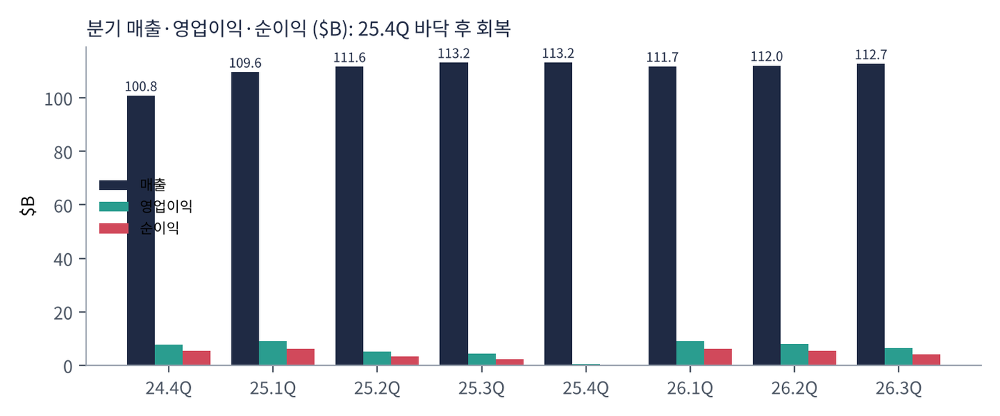
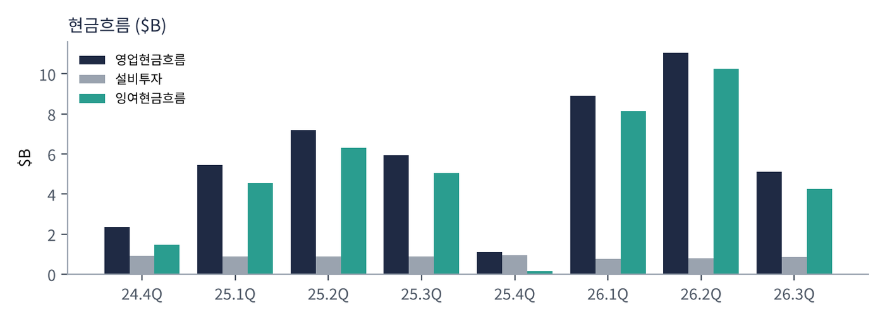
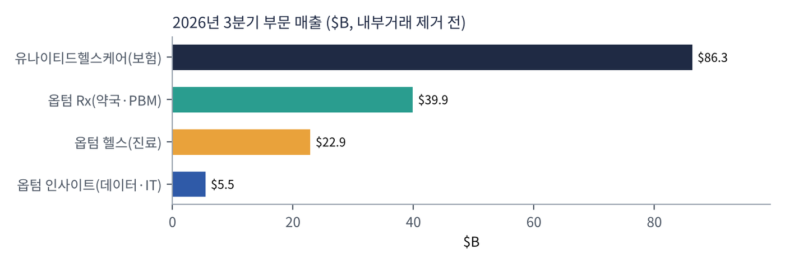
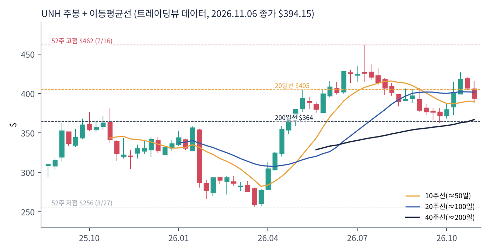
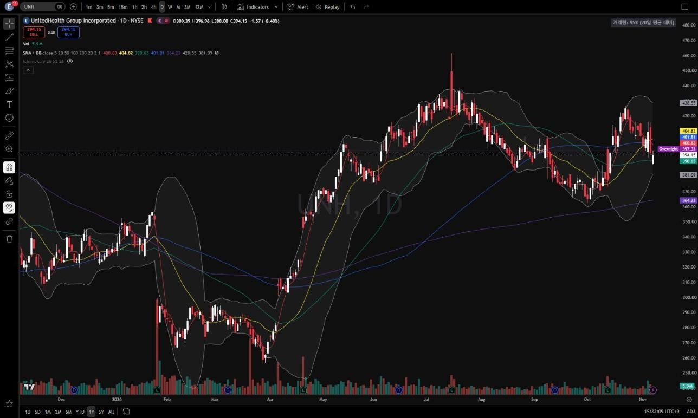
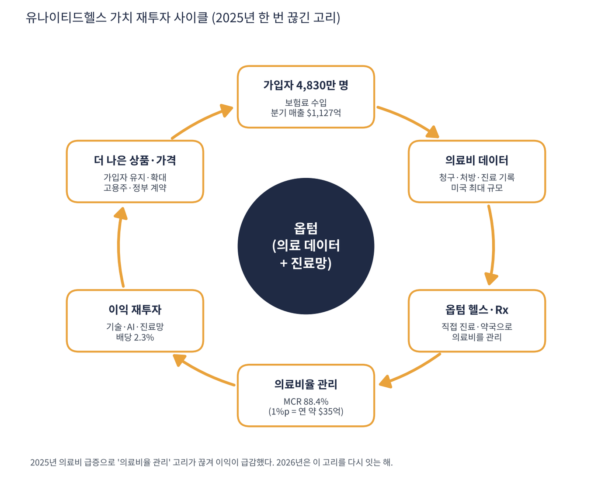

유나이티드헬스그룹은 미국 최대 건강보험사이자 최대 의료 서비스 회사다. 두 개의 회사가 하나로 묶여 있다고 보면 쉽다. ①유나이티드헬스케어는 기업·개인·정부(메디케어·메디케이드) 가입자 4,830만 명에게 보험을 팔고, ②옵텀은 직접 병원·클리닉을 운영하고(옵텀 헬스), 약국·처방약 관리(옵텀 Rx)와 의료 데이터·IT(옵텀 인사이트)를 판다. 연 매출 약 $4,500억으로 미국 기업 중 매출 상위권이다.
| 항목 | 내용 |
|---|---|
| 종목 | UnitedHealth Group (UNH) · NYSE · 본사 미네소타 |
| 시가총액 | 약 $3,530억 · PER 22.5배 · 배당수익률 2.27% (트레이딩뷰, 11/6 종가 $394.15) |
| 최근 분기(26.3Q) | 매출 $1,127억, 영업이익 $66억, 조정 EPS $4.69, 의료비율(MCR) 88.4% |
| 2026년 가이던스 | GAAP EPS $19.50 이상, 조정 EPS $20.50 이상 |
| 최근 1년 | 2025년 의료비 급증으로 가이던스 철회·CEO 교체 → 주가 3월 $256 저점 → 7월 $462 → 현재 $394 |
| 직책 | 인물 | 역할·특징 |
|---|---|---|
| CEO | 스티븐 헴슬리 | 2006~2017년 CEO로 회사를 키운 인물. 2025년 위기 때 CEO로 복귀(이사회 의장 겸임 이력) |
| CFO | 웨인 디베이트 | 2025년 합류. 비용 통제·가이던스 신뢰 회복 담당 |
| 부문 | 유나이티드헬스케어·옵텀 각 CEO | 2025~2026년 경영진 대거 교체 |
경영 스타일: '규율과 실행'으로의 복귀. 헴슬리 CEO의 3분기 코멘트 요지는 "규율과 실행으로 성과를 냈고, 환자와 의사에게 더 단순하고 지원적인 경험을 주는 회사로 바꾸고 있다"이다. 2025년 회사는 메디케어 어드밴티지 의료비가 예상보다 크게 늘어 연간 가이던스를 철회했고, 보험료 산정이 너무 공격적이었다는 비판을 받았다. 새 경영진은 ①수익성 없는 가입자·지역 정리 ②보험료 현실화 ③가치기반 진료(옵텀 헬스) 축소·재정비로 성장보다 마진 회복을 택했다. 옵텀 헬스 매출이 -10%인 것도 이 의도적 축소 때문이다.
보험 청구·처방·진료 기록을 한 회사가 모두 가진 미국 유일급의 데이터. 이를 AI로 분석해 의료비를 예측·관리하고, 청구 처리 자동화로 행정비를 줄인다.
보험료를 받아 남이 운영하는 병원비를 내는 대신, 자기 의사·약국·데이터로 환자를 직접 관리해 의료비 자체를 낮추는 것. 그 차액이 이익이 된다.
| 분기 | 매출 | 영업이익 | 영업이익률 | 순이익 | 영업현금 | 설비투자 | EPS | 특이 사항 |
|---|---|---|---|---|---|---|---|---|
| 24.4Q | $1,008억 | $77.7억 | 7.7% | $55.4억 | $23.7억 | $9.1억 | $5.98 | |
| 25.1Q | $1,096억 | $91.2억 | 8.3% | $62.9억 | $54.6억 | $9.0억 | $6.85 | |
| 25.2Q | $1,116억 | $51.5억 | 4.6% | $34.1억 | $71.9억 | $8.9억 | $3.74 | 의료비 급증·가이던스 철회 |
| 25.3Q | $1,132억 | $43.1억 | 3.8% | $23.5억 | $59.5억 | $8.9억 | $2.59 | |
| 25.4Q | $1,132억 | $3.8억 | 0.3% | $0.1억 | $11.1억 | $9.5억 | $0.02 | 일회성 비용, 이익 바닥 |
| 26.1Q | $1,117억 | $89.9억 | 8.0% | $62.8억 | $89.1억 | $7.6억 | $6.90 | 회복 시작 |
| 26.2Q | $1,120억 | $79.9억 | 7.1% | $54.8억 | $111억 | $8.0억 | $6.04 | |
| 26.3Q | $1,127억 | $65.6억 | 5.8% | $41.1억 | $51.2억 | $8.6억 | $4.56 | MCR 88.4% |


흐름 요약: 매출은 분기 $1,010억 → $1,127억으로 꾸준하지만, 이익은 2025년에 무너졌다가 2026년에 복구되는 V자다. 영업이익률이 25.1Q 8.3% → 25.4Q 0.3%까지 떨어졌다가 26.1Q 8.0%로 회복했고, 3분기는 계절적 의료비 증가로 5.8%다. 3분기 MCR 88.4%에는 과거 적립금 환입 $6.1억(유리한 효과)이 들어 있다. 최근 4분기 영업현금 $262억, 잉여현금 약 $228억으로 현금 창출력은 이미 회복됐다.
| 부문 | 돈을 버는 방식 | 26.3Q 매출 | 영업이익 | 포인트 |
|---|---|---|---|---|
| 유나이티드헬스케어 | 보험료 수입 − 의료비 지출. 기업·개인·메디케어·메디케이드 | $863억 | $28억 (3.3%) | 마진 2.1% → 3.3% 개선, 가입자 4,830만 |
| 옵텀 Rx | 처방약 관리(PBM)·약국. 처방 건당 수수료 | $399억 | $17억 | 처방 3.93억 건(전년 4.14억) |
| 옵텀 헬스 | 직접 운영하는 의사·클리닉·재택진료 | $229억 | $7.4억 | -10% (가치기반 진료 환자 축소) |
| 옵텀 인사이트 | 병원·보험사용 데이터·IT·청구 소프트웨어 | $55억 | – | +3% |

부문 매출 합계가 연결 매출보다 큰 것은 내부거래(유나이티드헬스케어 가입자가 옵텀을 이용) 때문이다. 이 내부거래 자체가 UNH 모델의 핵심이다. 보험(유나이티드헬스케어)이 매출의 대부분, 옵텀이 이익의 큰 몫을 만든다. 2026년은 보험 마진이 회복되고, 옵텀 헬스는 수익성 낮은 계약을 줄이는 중이다.
헴슬리 CEO가 말하는 목적은 "환자와 의사에게 더 단순하고 지원적인 경험"이다. 투자자 언어로 바꾸면 '의료비를 직접 관리해 보험료와 의료비의 차이(마진)를 안정적으로 지키는 것'이다.
| 축 | 내용 |
|---|---|
| 수직 통합 | 보험(돈) + 진료(옵텀 헬스) + 약(옵텀 Rx) + 데이터(옵텀 인사이트)를 한 회사가 보유 |
| 의료비 관리 | 예방·만성질환 관리로 비싼 입원·응급을 줄여 MCR을 낮춤 |
| 행정 단순화 | AI 청구 처리·사전승인 간소화(규제·여론 압박에 대한 대응) |
| 신뢰 회복 | 2025년 위기 후 보수적 가이던스, 가격 현실화 |


위: 트레이딩뷰 주봉 데이터로 재구성. 아래: 트레이딩뷰 공개 차트 일봉 캡처(작도 숨김).
| 이동평균 | 값 | 종가 대비 | 해석 |
|---|---|---|---|
| 5일선 | $400.83 | -1.7% | |
| 20일선 | $404.82 | -2.6% | 가장 가까운 저항 |
| 50일선 | $390.65 | +0.9% | |
| 100일선 | $401.81 | -1.9% | 7월 고점 이후 하락분의 중간 |
| 200일선 | $364.23 | +8.2% | 3월 저점 이후 상승 추세선 |
3월 $256 → 7월 $462(+80%) 급반등 후 4개월째 $360~430 조정이다. 200일선 위에서 20·50·100일선이 뒤엉킨 장기 상승 중 중기 횡보 국면이다.
| 규칙 | 기준 | 현재 값 | 신호 |
|---|---|---|---|
| 장기 추세 필터 | 종가 vs 200일선 | $394.15 > $364.23 | 매수 |
| 중장기 교차 | 50일선 vs 200일선 | $390.65 > $364.23 | 매수 |
| 단기 교차 | 20일선 vs 50일선 | $404.82 > $390.65 | 매수 |
| 돈키언 채널 | 55일 고가 $426.55 / 저가 $362.60 | 중간값 $394.58 아래 | 매도 |
| 1개월 모멘텀 | 21거래일 수익률 | +6.3% (기준 $370.95) | 매수 |
| 3개월 모멘텀 | 63거래일 수익률 | -3.6% (기준 $408.74) | 매도 |
| 6개월 모멘텀 | 126거래일 수익률 | +3.7% (기준 $379.98) | 매수 |
| 12개월 모멘텀 | 252거래일 수익률 | +20.3% (기준 $327.74) | 매수 |
| 종합 (8개 평균) | +0.50 | 매수 우위 |
해석: +0.50(매수 우위). 돈키언 중간값($394.58)을 단 $0.43 차이로 밑돌고 있어 다음 하루 이틀 움직임으로 점수가 +0.75가 될 수도, 그대로일 수도 있다. 14일 ATR $11.98 (3.0%).
| 가격 | 무엇이 바뀌나 | 의미 |
|---|---|---|
| $395 | 돈키언 중간값 회복 | 점수 +0.75 |
| $409 | 3개월 기준가 회복 | 점수 +1.00 |
| $390 | 50일선 이탈 → 20/50 교차 위험 | 점수 +0.25로 하락 |
| $363 ~ 364 | 200일선·55일 저점 | 장기 추세 이탈 |
200일선($364)과 55일 저점($363)이 겹치는 구간이 1차 지지다. 목표는 55일 고점 $427, 52주 고점 $462. 3일 이상 $363 아래에서 마감하면 손절한다(ATR 1배 = $352).
| 악재 요인 | 내용 | 강도 |
|---|---|---|
| 의료비 재급증 | 메디케어 어드밴티지 이용 증가·고가 신약(비만약 등)으로 MCR이 다시 90%를 넘으면 2025년 재현 | 높음 |
| 정부 수가·규제 | 메디케어 어드밴티지 지급률, 위험조정 코딩 규제, PBM 개혁 법안 | 높음 |
| 법적 조사 | 메디케어 청구 관행에 대한 정부 조사 보도, 독점 관련 소송 | 중간 |
| 평판·여론 | 보험금 거절·사전승인에 대한 사회적 반감 | 중간 |
| 가입자 이탈 | 보험료 인상·혜택 축소로 경쟁사로 이동 | 참고 |
| 티커 | 회사 | 시가총액 | PER(TTM) | PEG | P/S | EPS 성장(YoY) |
|---|---|---|---|---|---|---|
| UNH | 유나이티드헬스 | $353B | 22.5배 | – | 0.80배 | -9% |
| CVS | CVS헬스 | $107B | 9.8배 | – | 0.27배 | – |
| ELV | 엘레번스헬스 | $92B | 18.1배 | – | 0.45배 | -4% |
| CI | 시그나 | $78B | 12.1배 | 0.38 | 0.28배 | +32% |
| HUM | 휴매나 | $52B | 41.1배 | – | 0.34배 | -19% |
| CNC | 센틴 | $35B | 23.9배 | – | 0.16배 | – |
비교 결론: UNH의 TTM PER 22.5배는 시그나(12.1배)·CVS(9.8배)보다 훨씬 높다. 하지만 TTM 이익이 2025년 바닥을 포함해 낮게 잡혀 있어 선행 PER(19배)로 보면 차이가 줄어든다. 피어 중 이익이 늘고 있는 곳은 시그나(+32%, PEG 0.38 — '적극 매수' 구간)뿐이고, 휴매나·엘레번스는 여전히 이익 감소 중이다. UNH는 '업계 전체의 회복'에 베팅하는 대표주다.
유나이티드헬스는 적자 기업이 아니다. 2025년 4분기 순이익이 $1,000만으로 바닥이었지만 적자는 아니었고, 최근 4분기 순이익 $159억이다. 따라서 현금 런웨이 대신 현금 창출력과 부채를 본다.
| 지표 | 값 | 의미 |
|---|---|---|
| 최근 4분기 영업현금 | $262억 | SEC XBRL 25.4Q~26.3Q |
| 잉여현금흐름(FCF) | +$228억 | 설비투자 $34억 차감 (트레이딩뷰 $228억과 일치) |
| 총부채 | $743억 | 트레이딩뷰. EBITDA 대비 2.6배 |
| 배당 | 연 약 $80억 수준 | FCF로 충분히 커버 |
| 회사 | P/S | 영업이익률(대략) | 해석 |
|---|---|---|---|
| UNH | 0.80배 | 5~8% | 매출 $1당 시총 $0.8 |
| CVS | 0.27배 | 낮음 | 약국+보험(애트나) |
| 엘레번스(ELV) | 0.45배 | – | 순수 보험 비중 높음 |
| 시그나(CI) | 0.28배 | – | PBM 비중 큼 |
| 휴매나(HUM) | 0.34배 | – | 메디케어 의존 |
해석: 건강보험은 매출(보험료)의 85~90%가 그대로 의료비로 나가는 '박리다매' 사업이라 P/S가 1배 미만이 정상이다. UNH가 경쟁사보다 2~3배 높은 P/S를 받는 이유는 마진이 높은 옵텀(의료 서비스·데이터)을 갖고 있기 때문이다. 핵심 민감도: 매출 대비 이익률 1%p 변화 = 연 약 $45억 영업이익 변화. MCR이 1%p만 개선돼도 이익이 20% 가까이 늘어날 수 있는 구조라 P/S보다 MCR 추이가 주가를 결정한다.
| 지표 | 값 | 판정 |
|---|---|---|
| EBITDA (직접 계산, TTM) | $282억 | 흑자 |
| 구성 | 영업이익 $239억 + 감가상각 $43억 | SEC 25.4Q~26.3Q |
| EBITDA 마진 | 6.3% | 보험 사업 특성상 낮음 |
| 총부채 / EBITDA | 2.6배 | 투자등급 수준 |
| 방식 | PER | EPS 성장률 | PEG | 판정 |
|---|---|---|---|---|
| 트레이딩뷰 (TTM) | 22.5배 | -8.6% | 산출 불가 | 산출 불가 |
| 2026년 조정 EPS 가이던스 기준 | 19.2배 ($394.15 ÷ $20.50) | 약 +25% (2025년 조정 EPS 약 $16.35 대비) | 약 0.77 | 투자 적격 |
| 보수적 (2027년 성장 12% 가정) | 19.2배 | +12% | 1.60 | 기준 초과 |
판정: TTM 기준 PEG는 이익 감소(-8.6%)로 산출 불가. 2025년이 바닥이었다는 회사 전망을 받아들여 2026년 조정 EPS($20.50 이상)를 쓰면 PEG 약 0.77로 '투자 적격'이다. 다만 이 성장률은 '정상 이익으로의 회복'이지 '구조적 성장'이 아니다. 회복이 끝나는 2027년에 성장률이 10%대로 돌아오면 PEG는 1.5 이상이 된다. 투자 적격 판정은 '회복 국면 한정'이라는 조건이 붙는다. (2025년 조정 EPS는 회사 발표치 기억에 의존한 값이라 확인이 필요하다.)

유나이티드헬스의 사이클은 엔비디아처럼 '기술 → 수요' 구조가 아니라 '데이터 → 비용 관리 → 마진 → 재투자' 구조다. 2025년에 한 고리(의료비율 관리)가 끊어지며 전체가 멈췄던 사례라 고리별 점검이 특히 중요하다.
| 고리 | 현재 숫자 | 고리 강도 | 약해지는 신호 |
|---|---|---|---|
| ① 가입자 | 4,830만 명, 수익성 낮은 가입자 정리 중 | 재정비 | 가입자 급감, 메디케어 등급 하락 |
| ② 의료비 데이터 | 청구·처방·진료 통합 데이터 | 강함 | 데이터 사용 규제 |
| ③ 옵텀 헬스·Rx | 옵텀 헬스 -10%(의도적 축소), 옵텀 Rx 이익 증가 | 재정비 | PBM 규제 강화 |
| ④ 의료비율 관리 | MCR 88.4%, 보험 마진 3.3%(+1.2%p) | 회복 중 | MCR 90% 이상 재진입 |
| ⑤ 이익 재투자 | FCF $228억, 배당 2.3% | 강함 | 배당 동결·자사주 중단 |
| ⑥ 상품·가격 | 2026년 보험료 인상·혜택 축소 | 진행 중 | 경쟁사로 가입자 이탈 |
판단: 사이클이 다시 돌기 시작했지만 아직 '재정비' 단계다. 4개 고리가 노란색이다. 2027년 메디케어 수가(정부 지급률)와 2026년 4분기 MCR이 사이클 복구 여부를 확인할 다음 신호다.